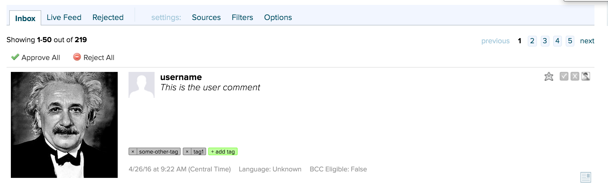

There are two supported ways in the Bazaarvoice Mobile SDK for implementing Curations photo upload in your iOS apps. You can use our skinnable submission form that handles all the UI display and submission for you, or you can use the submission API directly. Choose whichever suits your application's needs.
Important: Before you start implementing this Mobile SDK module, verify your installation by checking the steps on the Installation and Configuration page.
First, choose the upload API you want to use:BVCurationsPhotoUploader instance to handle the API request for you. BVCurationsPostViewController is a subclass of Apple's SLComponseViewController. When using this method to upload photos, you can give your end-users a familiar native experience using Apple's best practices for sharing content. This component can also be skinned with your company logo and navigation bar color.You need to be familiar with only the following two classes to create a Custom Post:
BVCurationsAddPostRequest.h when posting custom content.
The following example uploads a UIImage to your Curations group.
// upload this UIImage to Curations with the BVSDK
func uploadImageToCurations(image:UIImage) {
// Required parameters
let aliasInput = "username"
let tokenInput = "user_token"
let textInput = "This is the user comment."
let groupsInput = ["YOUR-GROUP"]
let params = BVCurationsAddPostRequest(groups: groupsInput,
withAuthorAlias: aliasInput,
withToken: tokenInput,
withText: textInput,
withImage: image!)
// Some optional parameters
params.tags = ["tag1", "some-other-tag"]
// alternatively, you can upload a photo(s) via HTTPS instead of a UIImage
// params.photos = ["https://upload.wikimedia.org/wikipedia/commons/6/6f/Einstein-formal_portrait-35.jpg"]
// You can also geo-tag photo uploads, which can also in turn be used to
// find photos by location and/or create photo maps
params.latitude = 35.997825
params.longitude = -113.766150
let uploadAPI = BVCurationsPhotoUploader()
uploadAPI .submitCurationsContentWithParams(params, completionHandler: { () -> Void in
print("Upload success!")
}) { (error) -> Void in
print(error.localizedDescription)
}
}#include <BVSDK/BVCurations.h>
...
// upload this UIImage to Curations with the BVSDK
- (void)uploadImageToCurations:(UIImage*)image {
// Required params
NSString *aliasInput = @"username";
NSString *tokenInput = @"user_token";
NSString *textInput = @"This is the user comment";
NSArray *groupsInput = @[@"YOUR-GROUP"];
BVCurationsAddPostRequest *params = [[BVCurationsAddPostRequest alloc]
initWithGroups:groupsInput
withAuthorAlias:aliasInput
withToken:tokenInput
withText:textInput
withImage:image];
// Some optional params
params.tags = @[@"tag1", @"some-other-tag"];
// alternatively, you can upload a photo(s) via HTTPS instead of a UIImage
// params.photos = @[@"https://upload.wikimedia.org/wikipedia/commons/6/6f/Einstein-formal_portrait-35.jpg"];
// You can also geo-tag photo uploads, which can also in turn be used to
// find photos by location and/or create photo maps
params.latitude = 35.997825;
params.longitude = -113.766150;
BVCurationsPhotoUploader *uploadAPI = [[BVCurationsPhotoUploader alloc] init];
[uploadAPI submitCurationsContentWithParams:params completionHandler:^(void) {
// success!
NSLog(@"Successful Post!");
} withFailure:^(NSError *error) {
// error
NSLog(@"ERROR: %@", error.localizedDescription);
}];
}BVCurationsPostViewController provided by the SDK allows you to customize the following attributes:
BVCurationsPostViewController you should already know the user's alias, token, and have a UIImage to present to the Share Controller. The BVSDK does not provide the code the image picker. Your app is responsible for pushing the Share Controller, displaying any progress, and dismissing the Share Controller when the user cancels the dialog or submits.
The code below demonstrates how to style and display the Share Controller and respond to end-user events.
// Here we load our request with the groups we want to subit to and additional info.
let shareRequest = BVCurationsAddPostRequest(groups: [],
withAuthorAlias: "authorAlias",
withToken: "token",
withText: "Hello.")
// We've hard-coded an image here for testing, where you would normally have the user select from a gallery or camera.
shareRequest.image = UIImage(named: "curations_test_image")!
// Now we just post the share view controller with a couple of styling options.
let shareVC = BVCurationsPostViewController.init(postRequest: shareRequest,
logoImage: UIImage(named: "happy_icon")!,
bavBarColor: UIColor.orangeColor(),
navBarTintColor: UIColor.whiteColor())
shareVC.placeholder = "Say something awesome\nabout your photo!"
shareVC.modalPresentationStyle = UIModalPresentationStyle.OverCurrentContext;
shareVC.didPressCancel = {
self.navigationController?.presentingViewController?.dismissViewControllerAnimated(true, completion: nil)
print("User cancelled")
}
shareVC.didBeginPost = {
// Here you could add your own spinner
print("Beginning Post Submission...")
}
shareVC.didCompletePost = {(error) in
// Here you could remove your spinner if added to the view
self.navigationController?.presentingViewController?.dismissViewControllerAnimated(true, completion: nil)
if error != nil {
print("Ooops, the submissions failed: " + (error?.localizedDescription)!)
} else {
print("Successful submission!")
}
}
self.navigationController?.presentViewController(shareVC, animated: true, completion: {
// completion
})// Here we load our request with the groups we want to subit to and additional info.
BVCurationsAddPostRequest *request = [[BVCurationsAddPostRequest alloc]
initWithGroups:@[]
withAuthorAlias:@"authorAlias"
withToken:@"token"
withText:@"Hello"];
// We've hard-coded an image here for testing, where you would normally have the user select from a gallery or camera.
request.image = [UIImage imageNamed:@"curations_test_image"];
// Now we just post the share view controller with a couple of styling options.
BVCurationsPostViewController *shareVC = [[BVCurationsPostViewController alloc]
initWithPostRequest:request
logoImage:[UIImage imageNamed:@"happy_icon"]
bavBarColor:[UIColor orangeColor]
navBarTintColor:[UIColor whiteColor]];
shareVC.placeholder = @"Say something awesome\nabout your photo!";
shareVC.modalPresentationStyle = UIModalPresentationOverCurrentContext;
[shareVC setDidPressCancel:^{
// completion
[self.navigationController.presentingViewController dismissViewControllerAnimated:true completion:^{
// completion
NSLog(@"User tapped cancel.");
}];
}];
[shareVC setDidBeginPost:^{
// Here you could add your own spinner
NSLog(@"Starting photo upload");
}];
[shareVC setDidPressCancel:^{
// completion
NSLog(@"User tapped cancel.");
[self.navigationController.presentingViewController dismissViewControllerAnimated:true completion:^{
// completion
}];
}];
[shareVC setDidCompletePost:^(NSError * _Nullable error) {
// completion
if (error){
NSLog(@"ERROR submitting photo: %@", error.localizedDescription);
} else {
NSLog(@"Success submitting photo.");
}
}];
[self.navigationController presentViewController:shareVC animated:YES completion:^{
// completion
}];
After you successfully create a Custom Post, check your Curations Management Console to verify the content has been uploaded and is ready for moderation, as shown in the screenshot below. Please contact Bazaarvoice if you are unfamiliar with how to log into the Curations Management Console.
Copyright 2017 Bazaarvoice, Inc. All rights reserved.
Use of the Bazaarvoice Mobile SDKs is contingent on your agreement and conformance with Bazaarvoice's API Terms of Use. Additionally, you agree to store all data acquired by the SDK or Bazaarvoice's API only within the storage of the individual application instance using the SDK or API. You also agree to use the data acquired by the SDK or API only within the context of the same individual application instance and only for purposes consistent with that application's purpose. Except as otherwise noted, the Bazaarvoice Android and iOS SDKs are licensed under the Apache License, Version 2.0.